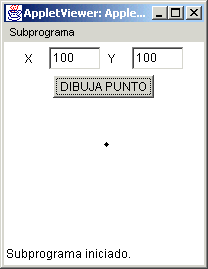

Módulo 3:
Métodos

1. Declaración y Definición de Métodos
|
Módulo 3:
Métodos
1. Declaración y Definición de Métodos |
|
Un método es algo muy utilizado en la programación de Java y en POO representa las conductas de los objetos que se traten. El método nos ayuda a definir un cambio en algún objeto y es importante que entendamos como funciona un método ya definido y como utilizarlo al hacer alguna aplicación o un applet. Volvemos en este momento a la definición de la clase Punto vista al inicio: public class Punto { private int x; // variable para la coordenada en x private int y; // variable para la coordenada en y public Punto() { // metodo para construir un objeto sin parámetros x = 0; y = 0; } public Punto(int x, int y) { // método para construir un objeto con parámetros this.x = x; this.y = y; } public int getX() { // método que te dá el valor de la coordenada x return x; } public int getY() { // método que te dá el valor de la coordenada y return y; } public void setX(int x) { // método que sirve para cambiar el valor de la coordenada x this.x = x; // this se utiliza porque se esta utilizando (x) como parámetro y como // variable de instancia y esto es para que no se confunda } public void setY(int y) { // método que te sirve para cambiar el valor de la coordenada y this.y = y; // this se utiliza porque se esta utilizando (y) como parámetro y como // variable de instancia y esto es para que no se confunda } } Esta clase queremos que contenga un método que nos sirva para dibujar un punto en la coordenada (x,y), entonces crearemos un nuevo método llamado paint(), el cual requerira un elemento gráfico como el que hasta ahora hemos utilizado con un applet paint(Graphics g). Si el método paint() de la clase Punto no recibe como parámetro el objeto gráfico de la clase Graphics, no habrá manera que pueda dibujar el punto. Veamos como quedaria ahora nuestra clase Punto modificada: public class Punto { private int x; // variable para la coordenada en x private int y; // variable para la coordenada en y public Punto() { // metodo para construir un objeto sin parámetros x = 0; y = 0; } public Punto(int x, int y) { // método para construir un objeto con parámetros this.x = x; this.y = y; } public int getX() { // método que te dá el valor de la coordenada x return x; } public int getY() { // método que te dá el valor de la coordenada y return y; } public void setX(int x) { // método que sirve para cambiar el valor de la coordenada x this.x = x; // this se utiliza porque se esta utilizando (x) como parámetro y como // variable de instancia y esto es para que no se confunda } public void setY(int y) { // método que te sirve para cambiar el valor de la coordenada y this.y = y; // this se utiliza porque se esta utilizando (y) como parámetro y como // variable de instancia y esto es para que no se confunda }
} Esta clase se utiliza creando un objeto de ella dentro de un applet y haciendo uso de sus métodos:
El applet ejecutado quedaría:  En el se puede observar un punto grande en la coordenada 100, 100, ahora hicimos este punto grande con el método fillOval y mandandole un diametro de mas de un pixel para que se viera la diferencia. Al utilizar un método, o al llamar (invocar) un método, nosotros le podemos pasar valores al método y a su vez, el método puede utilizar aquellos valores que han sido definidos en forma global, por ejemplo, nosotros en la clase Punto, dentro del método paint(), podemos utilizar x, o y, ya que ambas son variables de instancia definidas arriba de todos los métodos, por lo tanto todos los métodos pueden utilizar el valor de x o el valor de y. Por otro lado la clase Punto no es un applet y no tiene la capacidad de dibujar en un elemento gráfico por si solo, por eso desde el método paint() del applet, le pasamos al método paint de la clase Punto, el parámetro gráfico g, y de esa manera dentro del método paint() de la clase Punto es como este método puede dibujar. Es importante tambien que notes que en la clase Punto al introducir el método paint(), se hizo el import java.awt.*; ya que ahora que se dibuja, se requiere utilizar el método fillRect() el cual pertenece a los elementos de la clase Graphics que está dentro de ese paquete. Un método es definido como void cuando no requiere regresar un valor a quien lo llamó. En caso de requerir regresar un valor este puede ser de los mismos tipos que las variables definidas al principio:
Las variables y objetos definidos y creados dentro de un método se consideran locales al método y solo pueden ser utilizados dentro de él. Si al llamar a otro método se quiere que el método llamado utilice alguna variable o algún objeto, dicho método debe de tomarlo a través de un parámetro para tal efecto. Es muy importante que los métodos se llamen con el número exacto de variables y/o objetos definidos como parámetros, asi como el tipo correspondiente de cada uno de ellos.
|
|||||||||||||||||||||||||||||||||||||||
| Ejercicio | |||||||||||||||||||||||||||||||||||||||
|
2. Todas las clases tienen dos métodos que son muy utilizados, el método equals y el método toString. Se te pide completes la clase Punto para que contenga el método toString, el cual debe regresar un String que concatene los valores de las coordenadas x,y. La forma de regresar esto debe ser utilizando () paréntesis, por ejemplo el punto 3 en x, 2 en y debe regresarse como (3,2) en formato String. |
|||||||||||||||||||||||||||||||||||||||
| Ligas sugeridas | |||||||||||||||||||||||||||||||||||||||
| http://java.sun.com/docs/books/tutorial/native1.1/implementing/method.html | |||||||||||||||||||||||||||||||||||||||